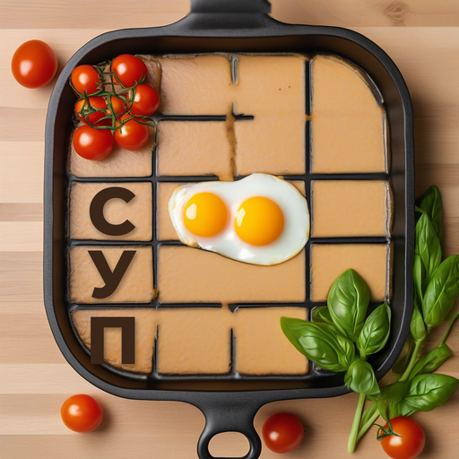
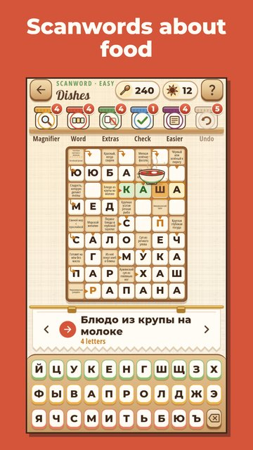

Food Scanwords
Food scanwords from Chef Timofey
Cozy scanwords only about food: dishes, groceries, spices, drinks and kitchenware, in a warm wooden kitchen.
Solve arrow scanwords, find words in word searches and fill your recipe book: every three solved issues of a theme open a new page.

- 300 scanwords and 450 word searches in 15 tasty themes.
- A recipe book of 90 simple home recipes.
- A daily issue and a word of the day, three tasks every day and a goal of the week.
- Festive tables by the calendar: New Year, Pancake week, Easter and autumn preserves.
- Hints: reveal a letter, remove extra letters from the keyboard or check yourself.
- Play offline.
Please note: scanwords are in Russian; word searches are in English (150) and Russian (300).
Put the kettle on and come to the table!